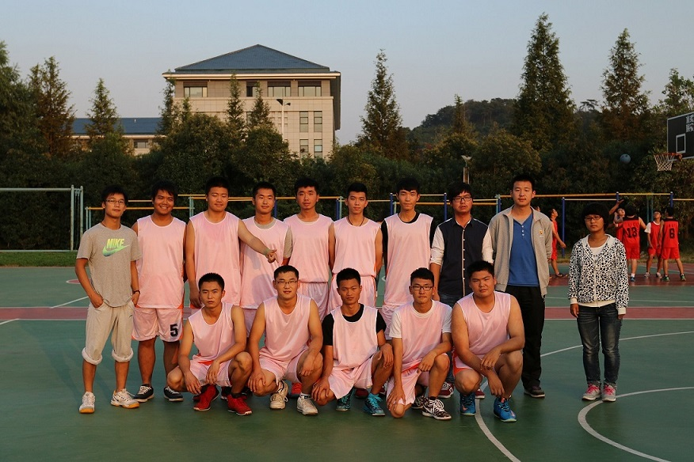
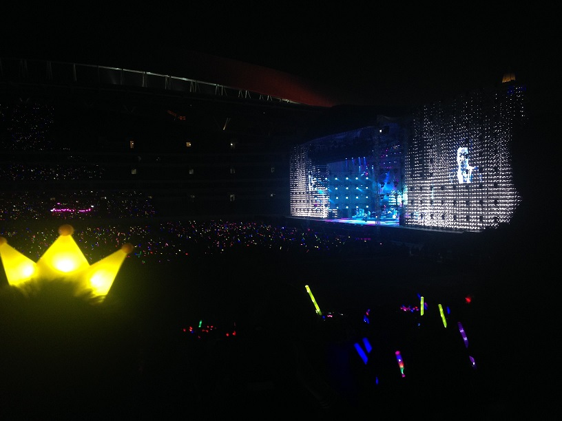
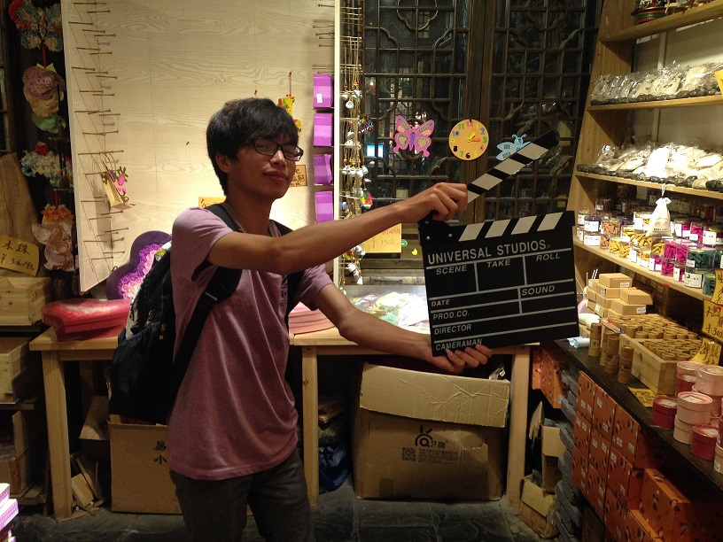
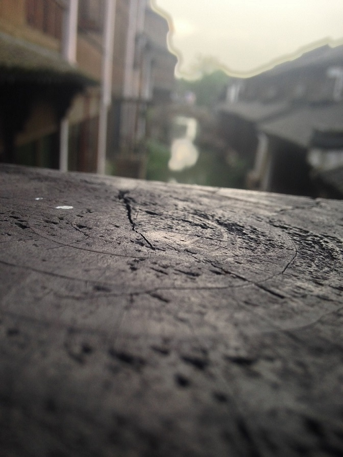

篮球
篮球，是他人生最初接触的一项运动，亦是他一生最爱的运动。
篮球让他最初体验到团队合作的快乐，除了快乐，篮球运动带给了他全力以赴做好一件事的决心与动力。
篮球让他的生活有意义有激情。不需要外界的干涉，仅仅依靠自己的力量，就可以体验到那种充实的、带有积极色彩的生命意义。
陈奕迅
陈奕迅，是他人生最初愿意认真聆听的一名歌手，亦是他一生最爱的歌手。
陈奕迅更像是一位长辈，在他青涩的年纪，教诲他一句句如歌的道理。《岁月如歌》，他总是在想，究竟何时才能吃透陈奕迅那一首《苦瓜》。
陈奕迅的一首《单车》，让他在父亲的驾驶座后偷偷哭过。每每听到陈奕迅的《我什么都没有》，他神情黯然不知人生为何。但一首《人生马拉松》，又能让他用尽力气地追下去。
旅行
他喜欢旅行，喜欢与一两个基友旅游谈心。
喜欢旅行，只因对于未知的玩意总是好奇，就如一个烂片，他明知道周边的人都说烂到没边没谱，反而更想去一探究竟。
至于为什么是与基友旅行？是因为呀，他人生的另一半，天都帮她去躲，躲开不见我。
人生
......